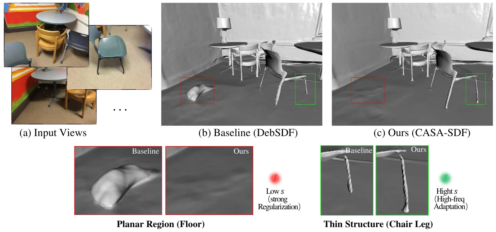
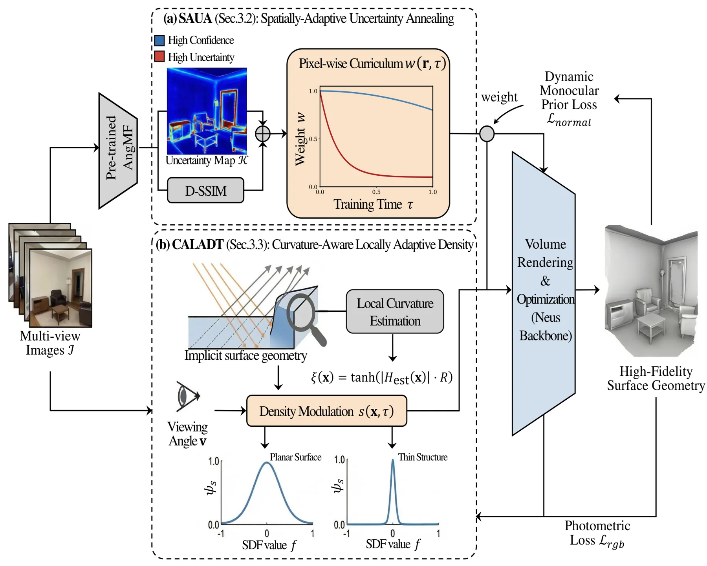
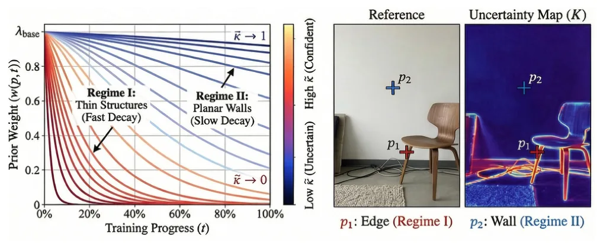
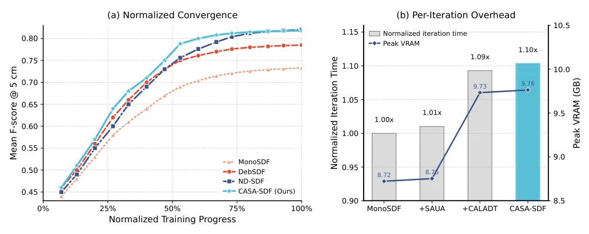

CASA-SDF：面向神经隐式表面重建的课程式空间自适应与曲率引导密度CASA-SDF: Curriculum-Aware Spatial Adaptation with Curvature-Guided Density for Neural Implicit Surface Reconstruction
直接面向神经隐式表面重建的几何异质性，机制清晰；摘要未给出具体数值，需检查先验来源、曲率代理稳定性、训练成本和跨数据集表现。
一句话工作总结
以像素级不确定性课程调节单目先验监督，并按局部曲率调整 SDF 密度锐度，兼顾室内平面与细结构。
摘要
室内场景同时包含大面积弱纹理平面和高频细薄结构，统一监督强度与全局 SDF-to-density 映射难以兼顾平滑和细节。CASA-SDF 通过两类互补适配解决这一矛盾：混合空间自适应不确定性退火融合语义与光度不确定性，为单目先验监督建立像素级课程，在可靠区域保持正则、早期减弱不可靠先验；曲率感知局部自适应密度变换则以曲率代理渐进调节 SDF-to-density 映射锐度，增强细结构表达。室内 benchmark 实验显示其改善表面完整性和高频细节恢复，同时维持平面稳定性。
Neural implicit representations have emerged as a powerful paradigm for 3D reconstruction. However, high-fidelity indoor surface reconstruction remains a significant challenge, primarily due to the pronounced \emph{geometric heterogeneity} of indoor scenes. Large texture-less planar regions typically require stronger regularization to suppress high-frequency artifacts, while thin structures demand sharper, more adaptive representations to mitigate the spectral bias of multi-layer perceptrons (MLPs) and prevent over-smoothing. Existing approaches often rely on spatially indiscriminate prior supervision and a scene-global SDF-to-density transformation, which constrains their ability to balance planar smoothness and detail preservation. In this paper, we propose CASA-SDF (Curriculum-Aware Spatial Adaptation for SDF), a unified framework that addresses this challenge via complementary adaptations of supervision and representation capacity. Specifically, Hybrid Spatially-Adaptive Uncertainty Annealing (SAUA) fuses semantic and photometric uncertainties to construct a pixel-wise curriculum for monocular prior supervision. This strategy maintains regularization in reliable regions while attenuating unreliable supervision early in training to enable data-driven photometric refinement. Meanwhile, Curvature-Aware Locally Adaptive Density Transformation (CALADT) progressively modulates the sharpness of the SDF-to-density mapping via a curvature proxy to enhance the representation of thin structures. Extensive experiments on benchmark indoor datasets demonstrate that CASA-SDF improves surface completeness and detail recovery on high-frequency structures, without compromising the stability of planar surfaces.
中文解读摘录
图表/页面预览
{kind=link}

{kind=link}

{kind=link}

{kind=link}
